🧲 Hook – filings that draw the invisible
Sprinkle iron filings around a bar magnet and each tiny filing becomes magnetized by induction, lining itself up with the local field direction. The result is a map of curved lines looping from one end of the magnet to the other — densest near the poles, spreading out further away.
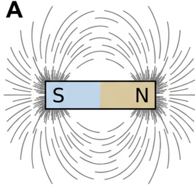
🪨 Permanent magnets, poles and ferromagnetism
The motion of electrons within atoms creates tiny magnetic fields, but in most elements these cancel out. Iron is a notable exception: it can be magnetized, along with iron alloys, nickel, cobalt and some rare-earth metals. These are called ferromagnetic materials. A ferromagnetic material that loses its magnetism quickly is described as magnetically 'soft' (pure iron is the key example); one that retains magnetism for a long time is magnetically 'hard' (e.g. steel).
The simplest permanent magnets are straight bars. Magnetism is effectively concentrated at the ends, called magnetic poles. There is only one type of mass, but two types of charge that can be isolated from each other. Magnetism is different: there are two types of magnetic pole — north (N) and south (S) — but they always occur in pairs. This N/S–pole arrangement is called a magnetic dipole. Confusingly, the pole names have no direct link to geography.
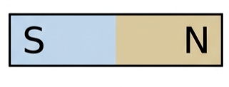
If a bar magnet is cut in half, the poles cannot be separated — the result is two smaller, weaker magnets, each still with a N pole at one end and a S pole at the other.
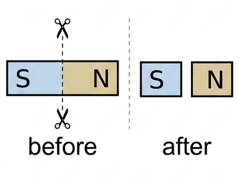
➰ Magnetic field lines
As with gravitational and electric fields, magnetic field lines are given a direction. Magnetic field lines always form closed loops. Outside a magnet, the direction of the field lines is from a N pole to a S pole; when field lines are drawn inside a magnet, their direction is from S to N.
Magnetic field lines can never cross, and the field is strongest where the lines are closest together — clearly strongest close to the poles.
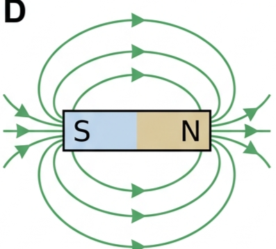
Magnets are often made into U-shapes, which strengthens the field near the poles. A strong uniform field, often needed for experiments, can be achieved with two parallel permanent magnets facing each other with opposite poles.
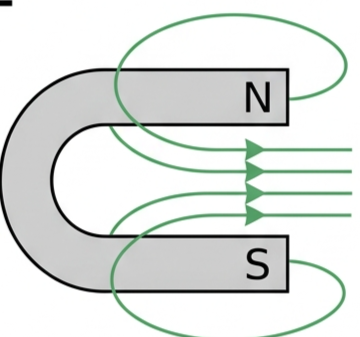
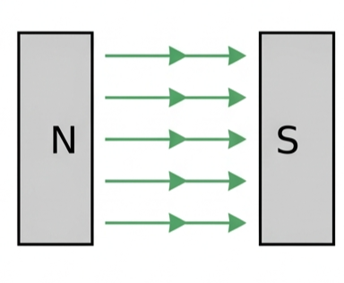
🧭 Forces between magnets and induced magnetism
Similar magnetic poles repel each other, opposite poles attract. If two bar magnets are brought close and at least one is free to move, the forces between them cause it to align — this is how many compasses work.
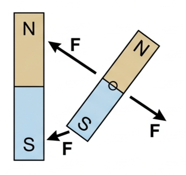
When ferromagnetic materials sit in a magnetic field, they tend to become magnetized to some extent — this is called induced magnetism, and it may reduce or disappear once the material leaves the field. This is why a permanent magnet can attract unmagnetized nails: each nail becomes magnetized and can then induce magnetism in other nearby nails. In the same way, every iron filing in Fig 1 is magnetically induced and lines up with the magnet's field.
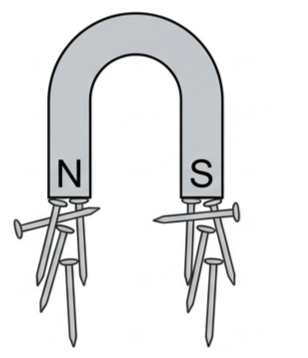
🌍 The Earth's magnetic field & detecting fields
The Earth behaves as a very large, weak bar magnet, with a magnetic south pole near the geographic North Pole. A compass needle is a small permanent magnet, free to rotate, which aligns with the Earth's field so that its own N pole points towards the Earth's magnetic S pole, close to geographic North. The magnetic north pole of any magnet is named for this behaviour: it is the end that points towards geographic North when freely suspended.
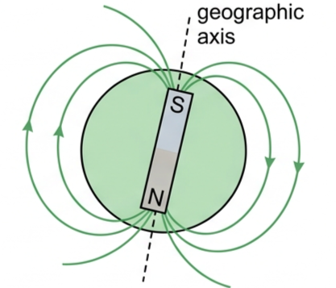
Small plotting compasses are widely used in the laboratory to detect magnetic fields around magnets, pointing along the field lines from magnetic north to magnetic south. They also feel the Earth's field, but this is weak compared with the field close to a bar magnet. Iron filings are also widely used to show a field's shape, and tiny magnetometers — now common in mobile phones — measure magnetic fields directly.
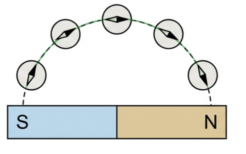
🔌 Magnetic fields around currents
Magnetic fields are produced by currents, so the simplest case to start with is a steady current in a long straight wire. The field lines around it are circular, concentric with the wire. Their increasing separation with distance shows that the field strength decreases as you move away from the current. This can be demonstrated with iron filings or compasses, though the field is weak unless a large current is used.
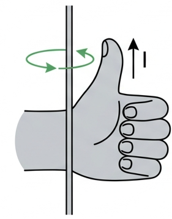
The direction of the field is predicted using the right-hand grip rule: point the thumb in the direction of the conventional current, and the curled fingers show the field's direction.
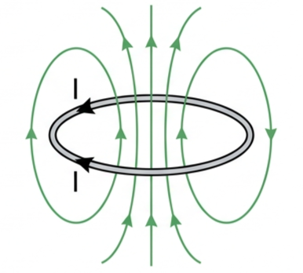
🌀 Coils, solenoids and electromagnets
A stronger field needs a greater current — but an easier way is to wind insulated wire into a coil or solenoid: a coil wrapped so that the turns do not overlap and it is significantly longer than it is wide. Each extra turn adds to the field strength at the same current. A circular coil produces a field pattern similar to a dipole; inside a solenoid the field is straight, parallel and closely spaced (strong and uniform), while outside it loops around from one end to the other, just like a bar magnet.
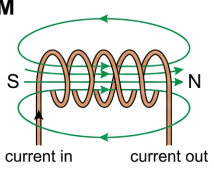
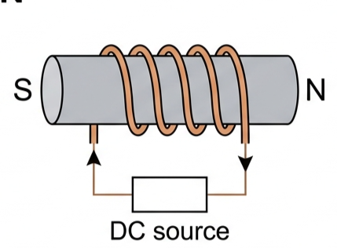
The polarity of the field — which end is N and which is S — depends on the direction of the current, and can be predicted with the right-hand grip rule (or: viewed from an end, that end is a S pole if the current there is clockwise). Strong electromagnets are made by winding a coil or solenoid on soft iron: field strength is controlled by the current's magnitude, and the soft iron core greatly increases the field's strength. Importantly, the electromagnet loses its magnetism as soon as the current is turned off — a steel core would instead retain much of its magnetism after the current is disconnected. Electromagnets have a very wide range of uses.
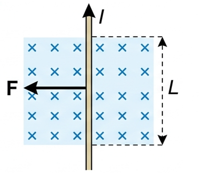
📏 Defining magnetic field strength, B
Gravitational field strength is \(g = F/m\) and electric field strength is \(E = F/q\), but magnetic field strength is less easily defined. Instead, it is described through the magnetic force experienced by a current flowing across the field — the simplest example being electrons in a current in a straight wire perpendicular to a magnetic field.
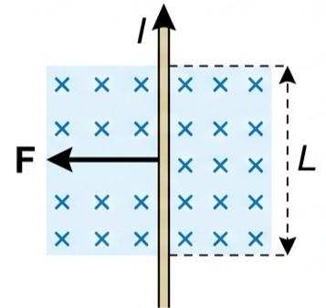
The magnitude of the magnetic force, \(F\), is proportional to the current, \(I\), and the length of conductor in the field, \(L\), and to the magnetic field strength, \(B\):
The SI unit of \(B\) is newtons per amp metre, \(\text{N A}^{-1}\text{m}^{-1}\), known as the tesla, T. 1 T corresponds to a very strong field, so milliteslas (mT) and microteslas (μT) are in common use.
➗ Magnetic field strength around a straight current
The field is created by the moving charges in the current and spreads around the wire. The magnetic permeability of a medium, or of free space, represents its ability to transfer a magnetic field and force — analogous to electric permittivity. Air's magnetic properties are almost identical to those of free space, whose permeability is given the symbol \(\mu_0\):
The field strength around a straight current depends on the current \(I\), the perpendicular distance from the wire \(r\), and the permeability of the surrounding air (≈ \(\mu_0\)):
📈 Graphs every examiner uses
| Graph type | Axes (X, Y) | Shape | What to read |
|---|---|---|---|
| \(B\) vs \(r\) (straight wire, fixed \(I\)) | X: distance \(r\) Y: field \(B\) | Inverse curve, falling steeply then flattening, never reaching zero | \(B \propto 1/r\); field weakens with distance but never vanishes |
| \(B\) vs \(I\) (straight wire, fixed \(r\)) | X: current \(I\) Y: field \(B\) | Straight line through the origin | \(B \propto I\); gradient equals \(\mu_0/(2\pi r)\) |
| \(F\) vs \(L\) (fixed \(B\), \(I\)) | X: length in field \(L\) Y: force \(F\) | Straight line through the origin | \(F \propto L\); gradient equals \(BI\) |
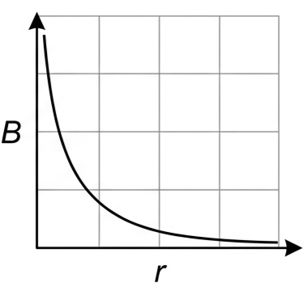
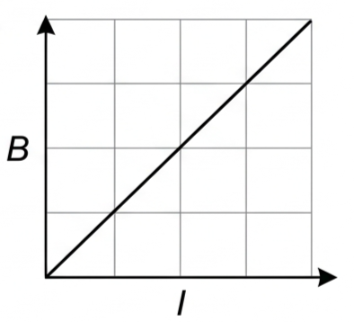
✍️ Worked example D2.7 – field strength from a known force
✍️ Worked example D2.8 – distance for a given field strength
⚙️ Real-world: electromagnets at work
Electromagnets are used because their field can be switched on and off, and its strength adjusted, just by controlling the current. Familiar uses include electric motors and generators, MRI scanners (which need extremely strong, controllable fields), and relays or circuit breakers, where a small control current switches a much larger circuit on or off.
🔬 HL extension: why μ₀ describes "free space"
The permeability of free space, \(\mu_0\), plays the same fundamental role for magnetic fields that the permittivity of free space, \(\varepsilon_0\), plays for electric fields — both describe how easily a vacuum transmits a field and force. Because air's magnetic behaviour is almost identical to a vacuum's, \(\mu_0\) can be used directly for currents in air with negligible error.
Challenge: a long straight wire carries a current of 3.0 A. Find the magnetic field strength 5.0 cm from the wire. (Answer: \(B = \mu_0I/2\pi r = (4\pi\times10^{-7})(3.0)/(2\pi\times0.050) = 1.2\times10^{-5}\ \text{T}\), i.e. 12 μT.)
⚠️ Trap corner – common mistakes
| Misconception | Correct view |
|---|---|
| Cutting a magnet in half isolates a single N or S pole | Magnetic poles always occur in pairs — cutting a magnet just gives two smaller complete dipole magnets |
| The magnetic N pole points toward Earth's geographic North because a magnetic N pole is there | Geographic North is actually near a magnetic south pole — the compass N pole is attracted to it |
| Magnetic field lines can cross, like intersecting paths | Field lines never cross; the field is strongest wherever the lines are drawn closest together |
| A steel-cored electromagnet is just as useful as a soft-iron-cored one | Steel keeps much of its magnetism once the current stops — useless for a device that must switch off cleanly (a relay, a scrapyard magnet) |
| The right-hand grip rule direction depends on which way the wire is drawn on the page | It always depends on the true direction of conventional current — thumb along the current, fingers curl the way the field points |
Complete the statements:
✓ b) With one polarity reversed, unlike poles now face each other: field lines run continuously from the N pole of one magnet across the gap into the S pole of the other, densest and straightest in the gap.
✓ b) Field lines emerge from the N end, loop around the outside of the solenoid, and re-enter at the S end; inside the core, the field lines run straight from S to N.
✓ MRI scanners, which need very strong, precisely controllable fields.
✓ Relays and circuit breakers, where a small control current switches a larger circuit on or off.
✓ This would make the device unsuitable wherever the magnetism must be switched off completely, such as a relay or a scrapyard lifting magnet.
✓ Plotted, these points give a smooth inverse curve, falling steeply at small \(r\) and flattening toward (but never reaching) zero at larger \(r\).
✓ Rearranging \(B=\mu_0I/(2\pi r)\) gives \(\mu_0 = 2\pi rB/I\), with units \(\text{m}\times\text{T}/\text{A} = \text{T m A}^{-1}\).